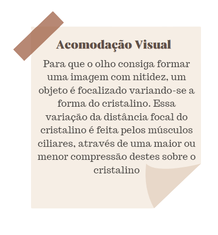

OQUE É HIPERMETROPIA
Hipermetropia, conhecida como o oposto da miopia, ou seja, a dificuldade de enxergar de perto.
Vemos a imagem borrada, portanto há uma dificuldade de olhar e ver objetos próximos porém de longe é perfeitamente visível, como ler uma placa de trânsito por exemplo.
DEFEITOS DA VISÃO
Conseguimos enxergar os objetos de modo nítido porque a imagem deles forma-se sobre a retina, no entanto, existem
alguns casos em que ela não se forma exatamente sobre a retina, originando o que chamamos de defeitos de visão. Esses
defeitos ocorrem em razão de uma possível deformação no globo ocular ou mesmo por uma defeituosa acomodação vi-
sual. Eles podem ser corrigidos com a utilização de óculos, lentes de contato ou por meio de cirurgia a laser.
Conheça abaixo alguns defeitos visuais:
Miopia
Daltonismo
Hipermetropia
Astigmatismo
FONTES:
https://www.preparaenem.com/fisica/optica-visao-globo-ocular.htm
https://efeitojoule.com/2009/09/optica-da-visao-fisica-optica-visao/
https://mundoeducacao.uol.com.br/fisica/olho-humano-um-instrumento-optico.htm
http://blog.professorbrunofernandes.com.br/2019/08/29/resumo-de-fisica-optica-da-visao/